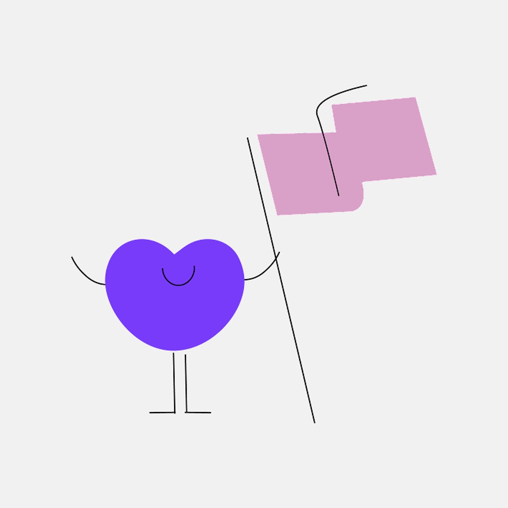

Étude de cas branding
Refonte Badoo
Les visuels d'une proposition de refonte pour Badoo, à destination des jeunes en France rurale, avec le slogan #entoutehonnêteté.
- Client
- Pitch pour Badoo
- Année
- 2020
- Rôle
- Designer & illustratrice
- Outils
- Adobe Illustrator

Le brief
Ma cliente préparait un pitch marketing pour Badoo : les visuels accompagnaient donc une proposition de stratégie et de concept. L'idée était d'aider Badoo à se défaire de son image d'appli de rencontres d'un soir, pour se rapprocher d'applis comme Bumble, Meetic et Hinge.
La plupart des applis de rencontre ciblent les grandes villes. Nous avons plutôt écrit un brief autour des jeunes de la France rurale, dont l'expérience des rencontres en ligne peut être très différente, et de la façon dont Badoo pourrait devenir un espace plus honnête et plus accueillant pour eux.
01
Identité
Couleurs & typographie
À côté du violet de Badoo, nous avons choisi des tons doux, menthe, pêche, abricot et lilas : ludiques sans être trop féminins, pour toucher l'audience la plus large possible.
02
Personnages
Des cœurs personnifiés
Le cœur de Badoo était déjà un personnage. Je l'ai développé et poussé plus loin, en donnant à chaque cœur sa propre personnalité (un peu comme les M&M's) pour le rendre plus ludique.
Ils peuvent tout exprimer, de la première étincelle à une vraie connexion, et offrent aux gens un personnage auquel s'identifier.


03
La campagne
Les abribus
La campagne a été pensée pour le milieu rural, pour encourager les habitants des petites villes et des villages à essayer des applis de rencontre comme Badoo. Les affiches sont donc montrées là où on les verrait vraiment : dans les abribus.
Chacune associe une phrase courte à l'un des cœurs.


Process
J'ai réalisé tous les visuels et illustrations dans Adobe Illustrator, puis je les ai livrés en SVG dans PowerPoint pour le pitch de la cliente.
Ce que j'en retiens
Concevoir pour une audience que la plupart des applis de rencontre ignorent a rendu ce projet passionnant. C'est l'un des premiers projets où j'ai travaillé la stratégie autant que les visuels.